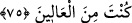
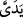
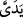

O’dur. Âmin!
75. Allah: Ey İblis! İki elimle yarattığıma secde etmekten seni meneden nedir?
Böbürlendin mi, yoksa yücelerden misin? dedi.
İblis’in secde etmekten kaçınması üzerine “Allah” İblis’e doğrudan şöyle dedi: “Ey
İblis!” Kendisine değer verdiğim için bir ana-baba tavassutu olmaksızın bizzat ve
özellikle “iki elimle yarattığım” bir varlık“a secde etmekten seni men’eden” ya da
secde etmemeye sevkeden âmil “nedir?”
Bu ifâde, Allah’ın doğrudan yapmış olduğu bir hitap olmasına rağmen, İblis’e değer
verildiğini göstermez. Çünkü bir efendi de kölesine öfke yollu hitaplarda bulunabilir.
Bununla ilgili açıklamalar Hicr Suresi’nde geçmişti.
Burada “el” () kelimesi, Âdem’i Allah’ın bizzat yaratmış olduğunu göstermek
amacıyla zikredilmiştir. Ancak, Allah’ın herhangi bir organa sâhip olma durumundan
münezzeh olduğuna dâir kesin deliller bulunduğu halde, burada ( )’in Allah’a isnâd
)’in Allah’a isnâd
edilmesi, halk ve icad gücüne sâhip yegâne varlığın O olduğunu ifâde eden bir
mecâzdır. Şöyle ki O’nun, baştan yaratma gücüne (îcâd) sâhip yegâne zat oluşu,
insanoğlunun yapıp ettiklerini özellikle kendisiyle yaptığı organ olan ()’e
benzetilmiştir. ( )’in () şeklinde tesniye gelmiş olması da Allah’ın bu yaratmasında
)’in () şeklinde tesniye gelmiş olması da Allah’ın bu yaratmasında
müthiş bir kudret bulunduğunu ve yaratma fiilinin birkaç merhalede gerçekleştiğini
gösterir. Zira Âdem’in çamuru kırk sabah yoğrulup şekilden şekle sokulmuş olması
hasebiyle, bir ana-babanın ya da (Hz. İsa’da olduğu gibi) sadece bir annenin nutfesinden
meydana gelen diğer insanların yaratılmasından farklı bir mâhiyet arzetmiş ve Cenâb-ı
Hakk’ın eşsiz, harikulâde yaratışı ile diğerlerinden ayrılmıştır.
Hakîm Senâî Allah’a isnâd edilen organları te’vîl ettiği bir Farsça beytinde şöyle
der:
Allah’ın ‘el’i kudreti, ‘yüz’ü ise bakâsı, ebedîliğidir,
“Gelmesi” hükmü, “inmesi” ihsânı ve lütfudur,
‘İki parmağı’, kader hükmünün icrası demektir,
“İki ayağı” da celâli, kahrı ve tehlikesidir.
Bir tefsirde der ki: Buradaki el’den maksad, “kudret” ve “nimet” elidir. Fütûhât’ta
der ki: Kudret ve nimet bütün varlıkları kapsayan şeylerdir. Çünkü Allah Âdem’i,
İblis’i yarattığı kudretle yaratmıştır, yâni ikisi de aynı kudretle yaratılmıştır. Fakat bu
şekilde Âdem’in şeref ve üstünlüğü ispat edilemez. Şu halde âyetteki “iki elimle”